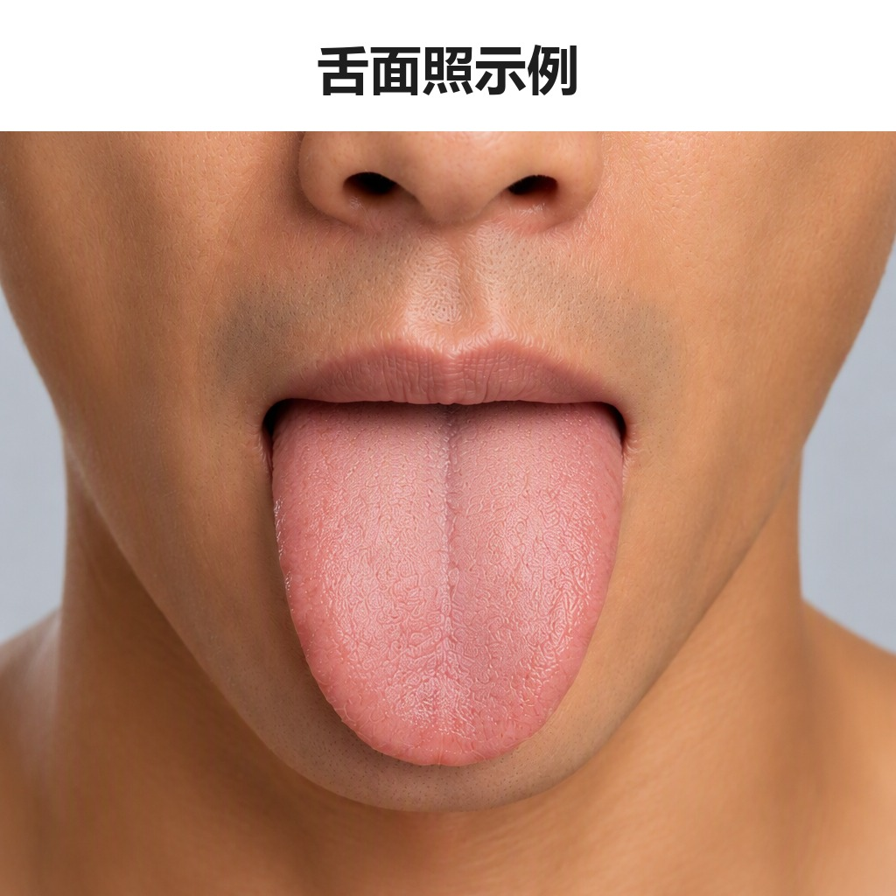
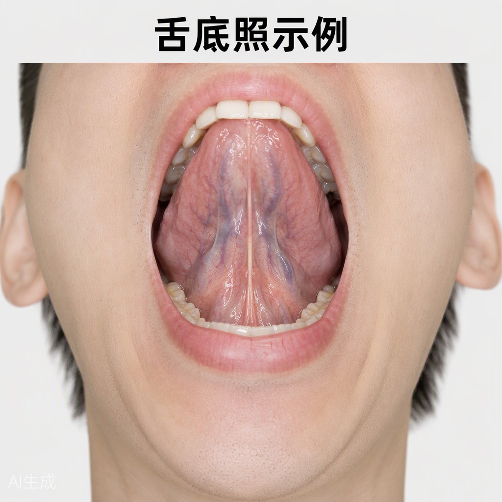
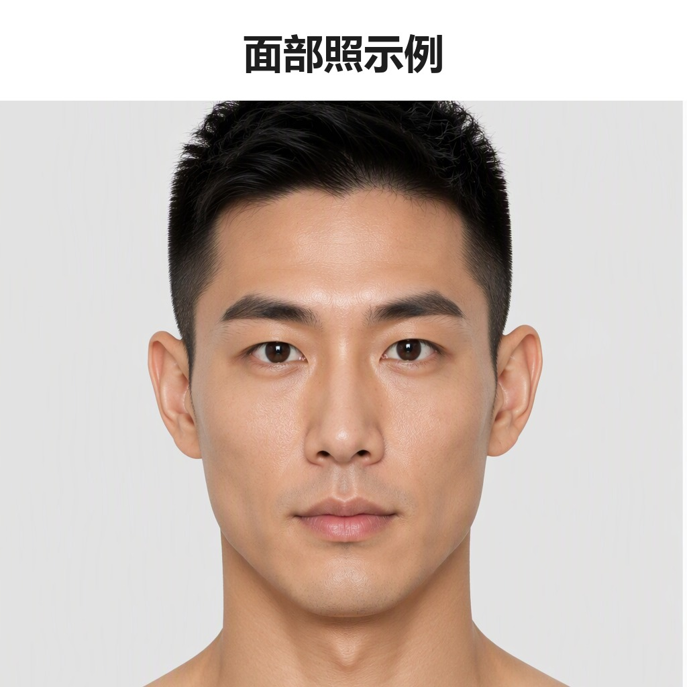
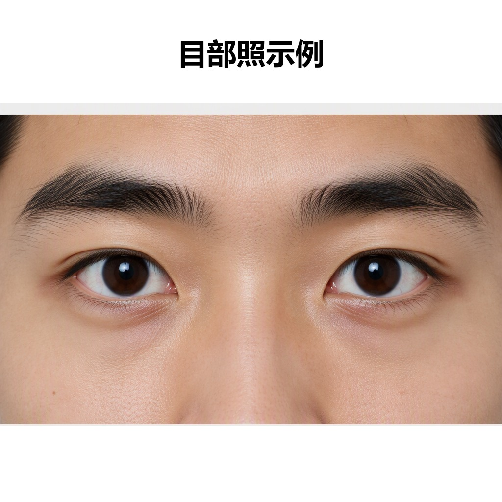
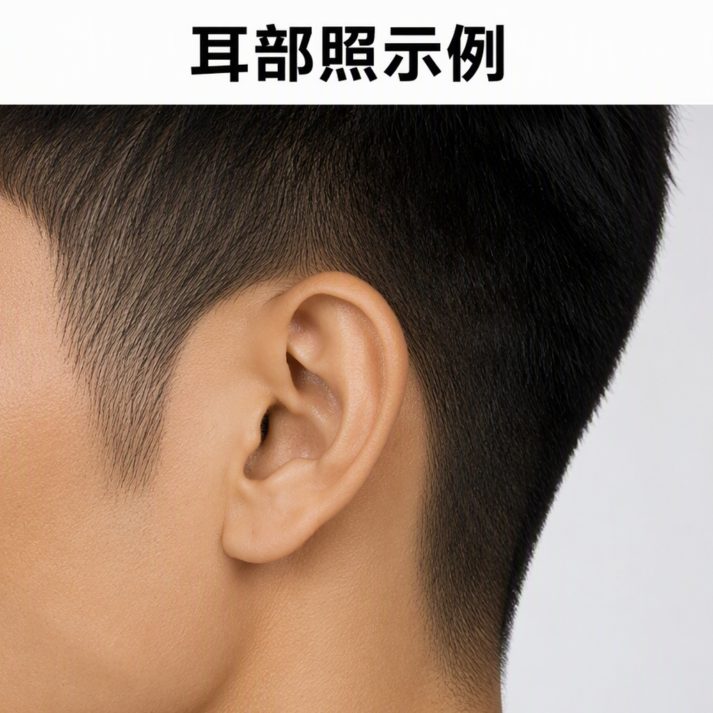
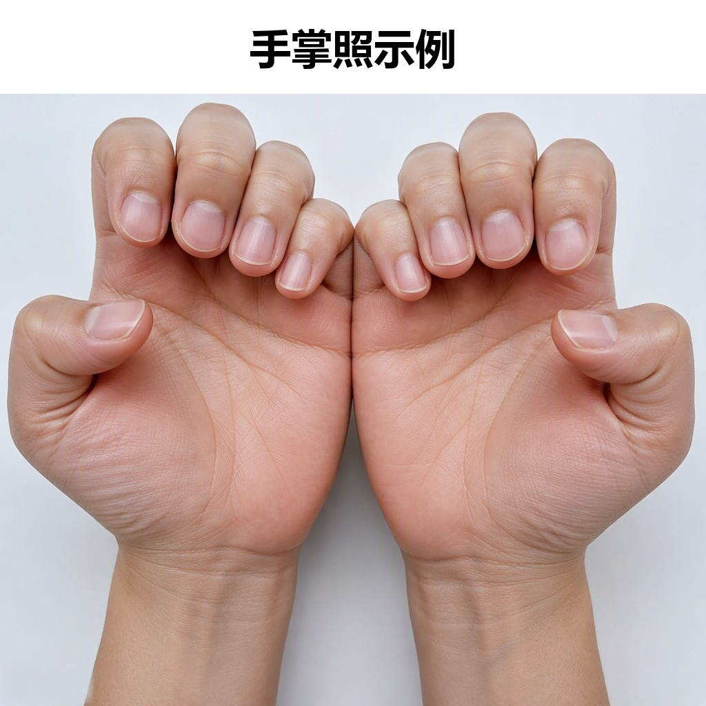
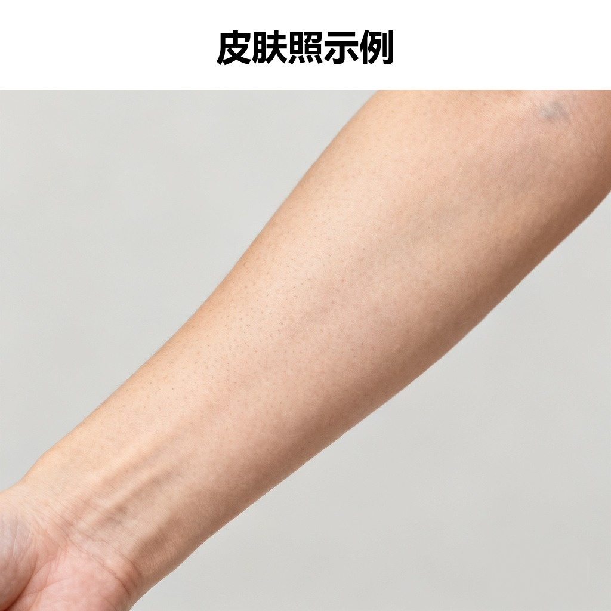

版本与变更 见根目录
VERSION与CHANGELOG.md（本文不重复标注，避免漂移）
识图模型 支持任意 OpenAI 兼容多模态模型；默认配置见.env.example，切换与重新标定方法见 README「配置自己的视觉模型」
本系统将传统中医"望诊"与现代 AI 视觉技术结合。你在浏览器里打开拍照向导（电脑或手机均可），按步骤拍摄身体七个部位的照片，视觉模型会自动识别部位、提取望诊信息，按照经典经方体系（三观→四证→六经）进行辨证分析，评分与报告全部在本机生成、本机保存。
辨证如断案，一份证据说一分话。 拍得到的拍照，拍不到的问诊，都不强求。
每天你可以拍摄任意数量的照片。系统会根据你上传的内容自动覆盖对应维度。
| # | 维度 | 照片 | 诊断价值 | 优先度 | 拍摄难度 |
|---|---|---|---|---|---|
| 1 | 舌诊 | 舌面+舌底(2张) | 四证全覆盖 | ⭐⭐⭐ 核心 | 简单 |
| 2 | 头面诊 | 正面1张 | 表里观第一关+唇诊+鼻诊 | ⭐⭐⭐ 极高 | 简单 |
| 3 | 目诊 | 眼部特写1张 | 少阳病核心 | ⭐⭐⭐ 极高 | 中等 |
| 4 | 耳诊 | 侧面1张 | 少阳中风定向 | ⭐⭐ 高 | 简单 |
| 5 | 手诊 | 双手掌面1张 | 阴阳快速筛选 | ⭐⭐⭐ 极高 | 简单 |
| 6 | 皮肤诊 | 前臂内侧/小腿1张 | 太阴中风标志 | ⭐⭐⭐ 极高 | 简单 |
「伸舌自然，光线均匀，对焦清晰」
拍摄要点：
常见错误：

「舌尖顶上颚，充分暴露舌下」
拍摄要点：
关键观察： 络脉颜色（淡紫/青紫/紫黑）、粗细（怒张/细涩）、有无瘀点

「正面平视，素颜自然光，拍到完整面部+嘴唇+鼻子」
一张正面照同时覆盖三个子区域——面域、唇域、鼻域。
拍摄要点：
关键观察：

「睁大双眼，拍清白睛和下眼睑」
拍摄要点：
关键观察： 白睛颜色（目赤程度）、眼睑浮肿（如卧蚕）、目眶暗沉、巩膜黄染

「侧面拍摄，耳朵完整入镜」
拍摄要点：
关键观察： 耳色（淡白/红赤/青黑）、耳轮润枯（润泽/干枯）

「掌面朝镜头，手指自然微屈，甲床可见」
拍摄要点：
关键观察： 手掌颜色（淡白/红/暗红）、手掌温度（由问诊获取）、甲床颜色（淡白/红润/暗紫）、甲床形态（光滑/粗糙/甲错）

「前臂内侧或小腿，非暴露部位最佳」
拍摄要点：
关键观察： 肤色、有无甲错（干燥粗糙脱屑）、黄汗痕迹、水肿、皮疹

以下是体系设计的 15 项问诊（全部可跳过）。当前 Web 向导暂不采集问诊——辨证仅基于六维望诊；问诊数据不改变置信度等级，只在同一等级内提升辨证精度（记录模型仍支持问诊覆盖统计，趋势页会显示）。后续版本若开放采集，以下项目即问卷内容。
| # | 问诊项 | 选项 |
|---|---|---|
| 1 | 恶寒or恶热？ | 恶寒 / 恶热 / 往来寒热 / 都不明显 |
| 2 | 有汗or无汗？ | 有汗 / 无汗 |
| 3 | 头痛or身痛？ | 无 / 头痛 / 身痛 / 头项强痛 |
| 4 | 口苦？ | 无 / 晨起口苦 / 全天口苦 |
| 5 | 咽干？ | 无 / 轻微 / 明显 / 咽干欲饮 |
| 6 | 目眩？ | 无 / 头晕 / 目眩(天旋地转) |
| 7 | 口渴？ | 口不渴 / 口渴欲饮 / 渴不欲饮 / 口燥但欲漱水不欲咽 |
| 8 | 食欲？ | 正常 / 纳呆不食 / 饥不欲食 / 消谷善饥 |
| 9 | 大便？ | 正常 / 便溏 / 便硬 / 便燥 / 下利 |
| 10 | 小便？ | 正常 / 小便清长 / 小便黄赤 / 小便白 / 小便不利 |
| 11 | 睡眠？ | 正常 / 失眠烦躁 / 嗜睡多寐 |
| 12 | 胸胁？ | 无不适 / 胸胁苦满 / 胸闷 |
| 13 | 腹部？ | 无不适 / 腹满 / 腹痛 / 心下痞 |
| 14 | 听力？ | 正常 / 耳鸣 / 听力下降 / 耳无所闻 |
| 15 | 鼻部？ | 正常 / 鼻塞 / 鼻鸣 / 鼻衄 |
💡 提示：问诊回答越多，辨证越精准。但完全不回答也完全可以——系统只会基于拍照信息做判断。
| 顺序 | 维度 | 为什么重要 |
|---|---|---|
| 1 | 舌面照 | 四证（水火气血）全覆盖 |
| 2 | 舌底照 | 瘀血第一窗口 |
| 3 | 头面部照 | 表里观第一关（面+唇+鼻） |
| 4 | 目部照 | 少阳病核心窗口 |
| 5 | 耳部照 | 少阳中风定向 + 津液辅助 |
| 6 | 手掌照 | 阴阳最快筛选器 |
| 7 | 皮肤照 | 太阴中风特异性标志 |
💡 以上 7 张覆盖全部 6 个维度 → 达到 HIGH 置信度 → 可输出具体方剂和剂量
| 顺序 | 维度 | 为什么重要 |
|---|---|---|
| 1 | 舌面照 | 四证全覆盖 |
| 2 | 舌底照 | 瘀血窗口 |
| 3 | 头面部照 | 表里观第一关 |
| 4 | 手掌照 | 阴阳筛选器 |
| 5 | 皮肤照 | 太阴中风标志 |
💡 以上 5 张覆盖 4 个维度 → HIGH 置信度 → 可输出具体方剂和剂量
| 顺序 | 维度 |
|---|---|
| 1 | 舌面照 |
| 2 | 头面部照 |
⚠️ 仅覆盖 2 维度 → MEDIUM 置信度 → 仅给方剂类别方向，不给具体剂量
python web/app.py（依赖安装与初始配置见 web-quickstart）提交后系统会自动：
💡 辨证报告在「单日详情」页底部的辨证报告卡片中查看，可点击「重新生成」按当前模板重出；更完整的启动与局域网配置说明见 web-quickstart。
辨证报告在「单日详情」页底部的辨证报告卡片中展示。以下示例取自示例记录 tests/fixtures/2026-06-25_analysis.json（合成数据，无临床含义）：
🏥 中医望诊辨证报告 — 2026-06-25（合成数据示例）
📊 置信度：🟢 HIGH（照片覆盖 6/6）
模板版本：prompt_template_version 1.2.0
🔍 经方辨证结论：
- 三观：表里观→里证为主 | 正邪观→正虚为主 | 津液观→津液不足
- 四证：水证·轻度 | 火证·轻度 | 气证·轻度 | 血证·轻度
- 六经归属：示例六经归属（合成数据）
- 核心病机：示例病机描述（合成数据，无临床含义）
💊 方剂建议（HIGH 置信度）：
- 示例方（合成数据，12 味）：
甘草 6g、茯苓 10g、陈皮 6g、山药 10g、莲子 10g、薏苡仁 10g、
桔梗 6g、生姜 3g、大枣 10g、白扁豆 10g、芡实 10g、砂仁 3g
- 方义：健脾化湿、和中养胃（合成数据，无临床含义）
- ⚠️ 剂量仅供参考，请在执业中医师指导下使用
报告随记录一同保存在当日 JSON 中，并记录生成所用的 prompt_template_version；在详情页点击「重新生成」可按当前模板重出一份。
⚠️ 安全提示：
💡 拍摄技巧：
👁️ 识图结果需肉眼确认的体征（望诊流程必做）：
模型识图值不能直接采信，以下体征请当场用肉眼复核后再签认：
| 体征 | 为什么必须肉眼确认 | 肉眼判断难度 |
|---|---|---|
| 点刺/芒刺 | 凸起度在二维照片上判不准，模型实测系统性偏向判「有」（同一舌照 9/9 误判）→ 已退出评分层，档案值仅供辨证参考 | 中（需凑近看舌尖舌边是否有凸起的红色颗粒） |
| 腻腐（腻苔） | 模型在「无/微腻/腻」之间判断层面抖动（实测三组全抖），直接影响「湿」的辨证方向 | 易（苔面是否黏腻、能否刮下，肉眼/刮苔即可判） |
| 齿痕 | 实测抖动（2026-09-18 实验 1 的 temp=0 组：10 次中 7 次「无」、3 次「轻度」，评分 0/4 摆动；temp=1.0 组 10 次全「无」） | 易（对镜张口即见舌边压痕） |
| 厚薄 | 实测抖动（同实验 temp=0 组：10 次中 8 次「稍厚」、2 次「薄」，评分 3/0 摆动；temp=1.0 组评分层稳定） | 易（苔的厚薄肉眼直观） |
以下字段识图较稳定，肉眼抽查即可：舌色、苔色、剥落、裂纹、舌下络脉（实验 1 两组共 20 次均一致）。
⚠️ 润燥属「措辞抖动」（润 / 润泽 随机出现，另偶见 1 次 偏干），但三者评分层同为 0 分，不影响评分，故不必列入清单。
📌 关于「点刺依据」键： 舌面识图现在会额外输出一个 点刺依据 字段（一句话说明凸起程度与分布），这是给复核用的辅助信息。按档案写法铁律「值禁判读注记」，该键不写入档案的体征值；如需保留，写入 lessons 或 *_note 注记字段。
⚠️ 点刺已退出评分层（prickles 不参与偏离度计算），档案中的 prickles 字段仅作辨证参考。评分口径变更导致历史偏离度不可直接比较（历史不追溯原则）。
🚫 备份目录不入版本库：records/_backup/ 含真实病案与姓名，已在 .gitignore 中排除。切勿用 git add -A 全量暂存（pre-push 守卫会拦截，但最好别依赖它兜底）。
「病随机转，方从法出；以法统方，以平为期。」 —— 经方经典